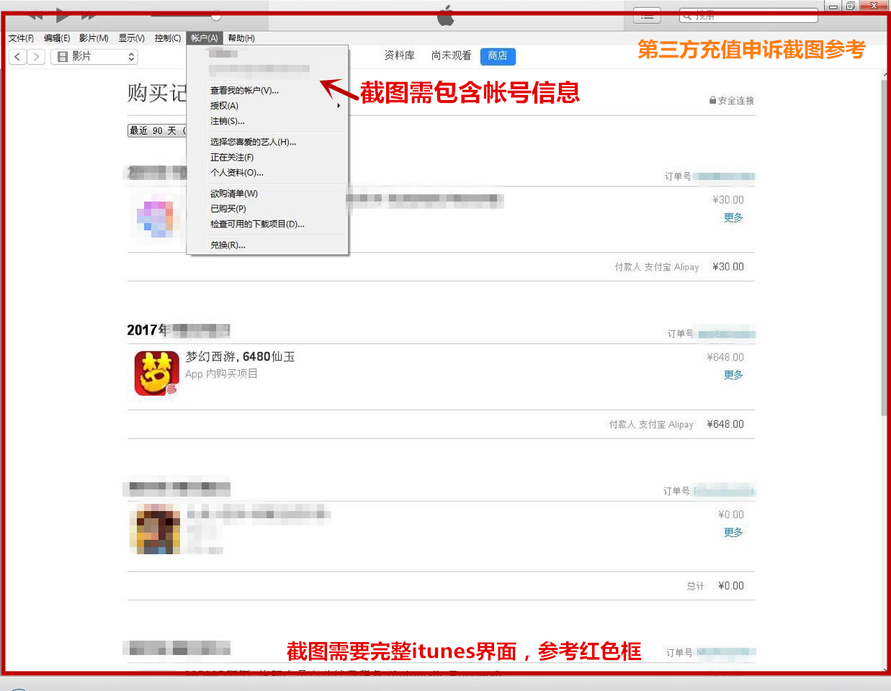

本游戏适合16岁以上的玩家进入。
积极健康的游戏心态是健康游戏的开端，本游戏故事情节设置紧凑，请您合理控制游戏时间，避免沉溺游戏影响生活，注意自我保护，防范网络陷阱。
《网络文化经营许可证》违法及不良信息举报中心
忘记角色关联手机
充值未到帐
忘记安全锁
误操作问题
忘记帐号/渠道
忘记帐号密码
被盗问题反馈
仙玉扣除问题
一、涉嫌充值退款欺诈扣除仙玉 扣除原因： 为了维护《梦幻西游》手游的公平和秩序，对于涉及充值退款欺诈的行为，网易公司将予以严厉打击和处罚，一经查证属实将采取包括 但不限于扣除仙玉、封停角色等处罚 解决方法: 遵守玩家守则，不再进行类似行为。 如你的角色不属于以上情况，可点击提交信息复查 提交前请查看 申诉截图样例 ，根据要求提交截图，否则无法进行复查。二、第三方充值仙玉扣除问题
[公告] 《梦幻西游》手游第三方充值打击公告
扣除原因： 为了维护《梦幻西游》手游的公平和秩序，同时保障玩家利益和账号信息安全，对于玩家在任何第三方充值平台充值或进行其他交易的 相关行为，网易公司将予以严厉打击和处罚，玩家在任何第三方充值平台充值或交易的行为一经查证属实将采取包括但不限于扣除仙玉、封停角色 等处罚，详细介绍请查看[公告] 《梦幻西游》手游第三方充值打击公告解决方法：
1、立即联系第三方卖家申请退款（例如淘宝申请退款），挽回损失； 2、以后充值杜绝第三方充值行为，避免再次出现。 如你的角色不属于以上情况，可点击>>提交信息复查，仙玉扣除复查请提供iTunes订单截图，截图上清晰可见“订单日期、订单金额、帐号信 息”，参考下图： 
金币扣除问题
扣除原因：：为了维护《梦幻西游》手游的公平和秩序，《梦幻西游》手游禁止和打击一切非正常交易行为，对此类行为将进行包括但不限于扣除异常交易所得等处理处罚。一、非正常交易定义：
我们会对游戏内摆摊交易进行监控，根据交易物品的稀有程度，属性，价值，帐号使用情况，买卖双方物品、金钱交易情况，操作痕迹等综合评 估，对不符合正常交易行为的情况进行处理。二、异常交易处理范围：
任何形式的异常交易行为，主要为以下几类。 1、利用摆摊交易进行不等价交易，将金币转移给他人，线下进行牟利的线下交易行为。 2、以赚钱为目的进行游戏，然后将获得的金币通过非正常交易转移给其他角色。三、为什么要处理异常交易行为：
为了稳定游戏经济，维护绝大多数正常玩家的利益。 1、防止工作室线下交易出售金币牟利。工作室牟利会导致通货膨胀，会导致正常玩家通过游戏辛苦获得的金币及物品快速贬值，严重损害正常玩 家的利益。 2、防止盗号者进行线下违规售卖获得利益，降低全体玩家的盗号风险。 如你的角色属于以上情况被扣除，不会返还金币，请以后游戏时留意。若你的角色没有以上行为，可点击>>金币扣除申述
游戏问题反馈
BUG问题反馈
BUG问题反馈说明
1、BUG问题包含但不限于涉及所有通行证用户帐号安全漏洞、影响游戏环境稳定、影响游戏正常运行、影响游戏的平衡性等问题； 2、反馈时请尽可能的详细描述BUG情况，例如出现时间、出现方式、影响等，同时尽可能提供重现BUG的步骤，如有截图，请一并提交。 了解以上情况后，可点击>>反馈BUG问题
运行相关问题指引
一、网络连接失败：
★移动设备端：
1、尝试切换网络（如wifi状态切换至稳定的3/4G网络），如4G网络下无法登陆，可尝试联系对应的网络运营商咨询； 2、尝试更换网络运营商（如使用的为移动网络，尝试连上联通/电信网络的热点）； 3、尝试重启设备； 4、尝试修改DNS，修改方法：设置 -> 无线局域网 -> 当前连接状态的网络右边的感叹号 -> DNS -> 删除当前DNS -> 手动输入一个地址，如 114.114.114.114，也可登录：dns.ip.cn查看公共dns列表； 5、建议尝试使用网易UU网游加速器来优化网速； 6、建议持续更新客户端，ios您需要在AppStore中更新，安卓您需删除当前客户端以及安装包，重新在官网my.163.com下载。★web/桌面版：
1、尝试拔掉路由器电源，5分钟后再连上以清空路由器缓存，也可以登录路由器设置界面选择系统设置-重启路由器（不同型号的路由器可能有所 不同，请参考路由器使用说明书）； 2、使用360安全卫士的网络修复工具修复网络，如仍不行，可尝试使用安全卫士中的DNS优选工具优化DNS； 3、建议尝试使用网易UU网游加速器来优化网速； 4、建议持续更新客户端，桌面版最新版本可在官网my.163.com中下载。 PS：mac系统dns设置方法：系统设置偏好网络以太网高级上方DNS-点击左下角“+”，添加114.114.114.114，添加保存后即可。 二、海外玩家登录困难：
1、尝试设置语言地区，设置方法：设置 -> 通用 -> 语言与地区 -> 地区 -> 修改为当前所在地区，如当前在意大利，就设置为意大利，当前在美 国就设置为美国； 2、尝试修改DNS：修改方法：设置 -> 无线局域网 -> 当前连接状态的网络右边的感叹号 -> DNS -> 删除当前DNS -> 手动输入一个地址，如： 8.8.8.8； 3、尝试重启设备； 4、建议尝试使用网易UU网游加速器来优化网速； 5、建议持续更新客户端，ios您需要在AppStore中更新，安卓您需删除当前客户端以及安装包，重新在官网my.163.com下载。 三、卡顿/闪退：
1、点击游戏下方的系统--把场景特性，同屏显示人数，画面刷新频率都调整为一般； 2、关闭游戏，重启设备以清空设备的运行缓存，运行游戏时尽量关闭其他app，保证足够的运行内存； 3、建议更新客户端，ios您需要在AppStore中进行更新； PS：如ios您反馈使用第三方输入法打字时出现闪退，回复请引导您先使用系统自带的输入法，再提供第三方输入法的名称类型给我们，提供给运 维进行反馈。 四、桌面版运行相关问题：
1、如桌面版运行过程中出现提示：“程序发生不可挽回的错误” ，解决方法： （1）右键梦幻手游客户端，点击”以管理员身份运行“来运行客户端； （2）升级电脑的显卡驱动。 2、如出现桌面版无法更新，出现提示：“无法下载patch，请检查网络” ，解决方法： （1）请确认网络畅通的情况下，找到梦幻手游安装目录，在目录中找到MywebHelper.exe双击运行，点击一键修复； （2）如仍未解决，可尝试删除当前客户端，重新在官网my.163.com中下载最新版本的客户端，安装后进行更新； 3、如出现桌面版/网页版提示“安全证书吊销信息不可用”的解决方法： （1）使用IE浏览器，选择工具-Internet选项； （2）选择安全-受信任的站点-站点，查看下是否有my.163.com域名在你的网站列表，如无，请手动添加my.163.com到信任列表； （3）选择安全-自定义级别，将脚本选项里面的Java小程序脚本、活动脚本、启动XSS筛选器都启用； （4）选择隐私，勾选SSL、TSL协议； （5）点击应用-确定，然后重新打开网页版或桌面版尝试。 4、如桌面版画面出现缺失异常，解决方法： （1）升级电脑显卡驱动，升级window系统； （2）更换电脑显卡硬件。 5、如桌面版画面出现提示sdk not init，绝大多数为浏览器的设置问题，需要您修复浏览器，请参考以下方式： （1）需要您在桌面创建一个txt文档，把以下内容复制进文档去： @echo off title: IE temporary file deleter echo 正在 修复你的IE浏览器，请稍候 ............ echo 重置IE浏览器设置 RunDll32.exe Inetcpl.cpl,ResetIEtoDefaults pause （2）保存后关闭，右键点击该txt文档重命名，把后缀txt改成bat，然后双击运行，即可为您修复浏览器，修复后再尝试运行游戏，如果仍未解 决，请您再次联系我们并提供您的电脑操作系统 6、如出现桌面版安装时提示某些安装文件被破坏，解决方法： （1）下载过程中损坏，建议您使用浏览器自带下载功能，或使用迅雷下载后尝试； （2）解压过程中损坏，建议您安装7zip解压工具重新解压后安装； （3）下载后可以登录网址：http://g18.gdl.netease.com/MD5.exe，下载MD5检测工具，按照工具的步骤检测下载的安装包的MD5值，与 http://my.163.com/zmb/右侧版本信息下方的MD5值对比，一致则安装包正常。 7、如桌面版或者网页版提示脚本错误或无法加载二维码，请尝试： （1）使用IE浏览器，选择工具-Internet选项； （2）选择安全-受信任的站点-站点，查看下是否有my.163.com域名在你的网站列表，如无，请手动添加my.163.com到信任列表； （3）选择安全-自定义级别，将脚本选项里面的Java小程序脚本、活动脚本、启动XSS筛选器都启用； （4）选择隐私，勾选SSL、TSL协议； （5）点击应用-确定，然后重新打开网页版或桌面版尝试； （6）通过以上设置仍无法登录，则需要您切换到其它网络以及使用软件如360进行修改优化对应的DNS即可。 8、如您根据第7点设置后仍然出现该情况，请您根据下面的指引尝试： 目前需要您使用ie6以上的浏览器，登录网址：http://nstool.webapp.163.com/ 检测；（由于默认是使用https协议，建议您点击该网址页面 的“切换”按钮，两个协议都测试下） 桌面版的情况下，查看检测的结果： （1）如果dns项显示异常，那基本就是dns的问题了，按修复dns的方法 （2）如果dns项正常，则需要重置浏览器设置： [1]需要您在桌面创建一个txt文档，把以下内容复制进文档去： @echo off title: IE temporary file deleter echo 正在 修复你的IE浏览器，请稍候 ............ echo 重置IE浏览器设置 RunDll32.exe Inetcpl.cpl,ResetIEtoDefaults pause 9、如桌面版或者网页版提示保存环境信息失败，建议您更新电脑硬件配置，如内存、显卡等。


本游戏适合16岁以上的玩家进入。
积极健康的游戏心态是健康游戏的开端，本游戏故事情节设置紧凑，请您合理控制游戏时间，避免沉溺游戏影响生活，注意自我保护，防范网络陷阱。
《网络文化经营许可证》违法及不良信息举报中心